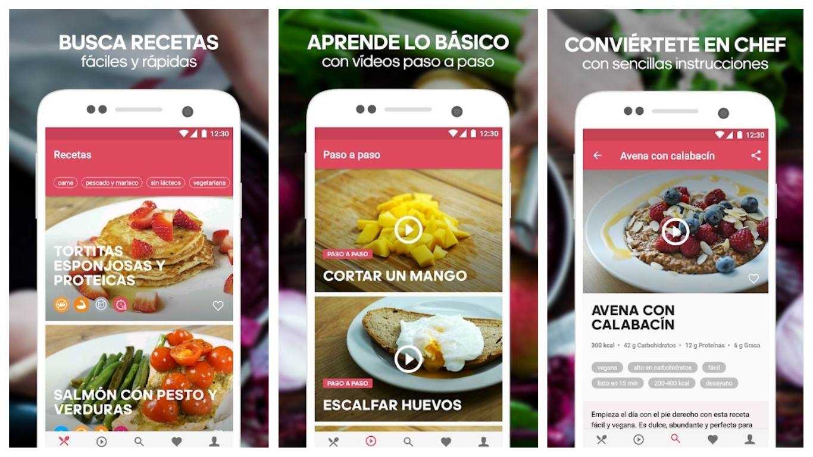

Galería de Proyectos
A continuación, presento una selección de proyectos en los que he trabajado, incluyendo una breve descripción y una imagen de cada uno.
-
Proyecto 1: Aplicación de Reserva de Mesas
Desarrollé una aplicación que permite a los usuarios reservar mesas en restaurantes de manera sencilla y rápida, mejorando la experiencia del cliente.

-
Proyecto 2: Aplicación de Recetas Saludables
Una aplicación que sugiere recetas saludables personalizadas según preferencias alimenticias.
 -
Proyecto 3: Aplicación de Seguimiento de Hábitos
Este proyecto consiste en una aplicación móvil diseñada para ayudar a los usuarios a establecer y seguir hábitos saludables. La app permite a los usuarios registrar sus hábitos diarios, como el consumo de agua, la actividad física y la meditación. Además, ofrece recordatorios y gráficos de progreso para motivar a los usuarios a cumplir con sus objetivos.